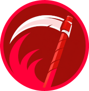
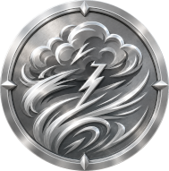
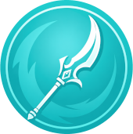

Scythe
Tempest
Glaive"The right answer depends on the right kind of thinking — so we built nine."— Marketing shit made up by Think Fox
Nine colours, nine engines, one Think Fox. A fully featured AI interface ready for you to use. Think Fox puts you in command of 9 hand picked Large Language Models we call Engines.
Each engine carries its own tone, depth, specialism and colour! Match the colour to the problem you're solving.
Pick the tier that fits — a brainstorm, a board memo, a deep technical breakdown — and switch any time without losing the thread of your conversation.
Think Fox can do all through the 9 engines of intelligence. The new gimmick involves callsigns, not bikinis. Very sad to see the bikinis go, but callsigns are cool too. And as you can see above, there is still one bikini left.
Think Fox is the controller in a bikini. The engines are the pilots with callsigns. Designed to run on openrouter infrastructure, but soon you will be able to bring your API anywhere, or run locally from your home.
Each tier remains colour-coded across the Think Fox system, so you always know which mind you are in controlling.
High-criticality reasoning and versatile execution for complex, multi-step workflows. The definitive starting point for heavy cognitive lifting.
Optimized for high-throughput multimodal processing and rapid context synthesis. Excels at parsing dense, multi-format data streams.
Bottom-line-up-front executive summaries, sharp business framing, and zero wasted words. Built for the boardroom and high-stakes corporate strategy.
Rigorous analytical frameworks, deep technical breakdowns, and full coding fluency. Deploy when absolute precision and structural logic are required.
Extended thinking and maximum criticality for the hardest, most abstract problems. Reserved for deep-dive research and complex systemic analysis.
Nuanced, long-horizon agentic planning with superior instruction following and safety alignment. Ideal for sustained, multi-phase project orchestration.
High-efficiency mixture-of-experts routing designed for low-latency agentic tool execution. Fast, lightweight, and highly responsive for real-time tasks.
Graphics-accelerated architecture optimized for high-throughput orchestration and custom domains. Handles heavy computational routing with ease.
Creative brainstorming, structural ideation, and dynamic roleplaying capabilities. The premier engine for shaping raw concepts into polished narratives.

Scythe
Tempest
Glaive"The right answer depends on the right kind of thinking — so we built nine."— Marketing shit made up by Think Fox
Security hardening is complete. The API is stored locally in your browser. The public chat interface is ready for use. You must supply your own Openrouter API.
ACCESS INTERFACE →